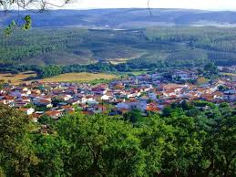
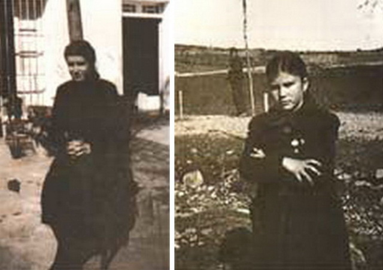

LA CODOSERA.
Donde las cosas son de otra manera
Inicio
Historia
Tradiciones
Datos estadísticos
Información Turítica
Contenido multimedia
Contacto
Sobre el pueblo
La Codosera es un municipio español, perteneciente a la provincia de Badajoz (comunidad autónoma de Extremadura). Se sitúa al noroeste de la provincia de Badajoz, junto a la frontera con Portugal. Pertenece a la comarca de Tierra de Badajoz y al Partido judicial de Badajoz. Los picos más altos son la Lamparona, con 596 m. (el punto más alto de la localidad), la sierra de Matasiete con 538 m. y la sierra de La Calera, formando el valle en el que se asienta La Codosera.
Como está cerca de la frontera portuguesa, surcado por el río Gévora y sus afluentes, el clima es más húmedo y la masa forestal está constituida fundamentalmente por bosques formados por el castaño, el olivo, el olmo, la encina, el alcornoque, el pino, el aliso y el eucalipto. También abunda el brezo, la jara y el tomillo.
Las riberas del río Gévora nos ofrecen el contraste de las zonas de regadío, pues sus márgenes están formadas por frondosas arboledas de encinas, sauces, fresnos saúcos, arraclanes, mimbreras y alisos, que se mezclan con algunos arbustos, donde la adelfa es la especie más común. Las plantaciones de regadío se basan en todo tipo de hortalizas y legumbres, como por ejemplo, tomates, judías, garbanzos, cebollas… También es importante el cultivo de arroz en la zona.
La ganadería en la zona es principalmente ovino, porcino y caballar. La fauna en esta localidad es muy rica y abundante. En cuanto a mamíferos podemos nombrar al jabalí, el conejo común, la jineta, el ciervo… Y en cuanto a las aves, la abubilla, el cuervo , la paloma, el pato, el abejaruco, el alimoche…


El milagro
En el paraje denominado Chandavila, cerca de la población pacense de La Codosera, en 1945 se produjeron unas supuestas apariciones milagrosas que acapararon la atención de los vecinos de la época, los testigos de estas apariciones marianas fueron dos niñas, Marcelina y Afra. A las tres de la tarde del 27 de mayo de 1945, Marcelina Barroso, de diez años de edad, iba camino del caserío El Marco junto a su prima, Agustina González para cumplimentar un encargo de su madre. No habían recorrido más de tres kilómetros, cuando, al pasar por la zona conocida como Chandavila, Marcelina reparó en un extraño y oscuro bulto que se divisaba a unos sesenta metros sobre un castaño. No haciéndole demasiado caso pensó que a la vuelta repararía si aquel extraño objeto continuaba allí. A la vuelta la pequeña Marcelina muerta de curiosidad volvió a mirar sobre el mismo castaño y cual fue su asombro al distinguir claramente a la Virgen de los Dolores, con manto negro, se encontraba envuelta en unos rayos luminosos y elevada sobre la mitad del tronco, estaba de perfil mirando hacia el pueblo con las manos juntas y un rostro bellísimo reflejaba una divina tristeza. Desaparecida al cabo de unos segundos la visión Marcelina echó a correr hasta el pueblo, junto a su prima, a pesar de que Agustina no había visto nada. Al llegar a casa, pensó en guardar silencio, pero no pudiendo tenérselo callado se lo contó a su madre y el hecho se extendió como la pólvora por todo el vecindario.
Web básica desarrollada por Julio Rivera
Alumno FP DAM a distancia. IES Augustobriga. Navalmoral de la Mata (Cáceres.)